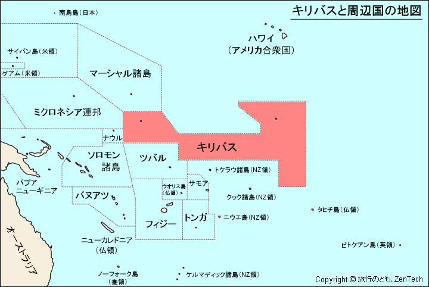

キリバスは、太平洋の真ん中にある33の島からなる国で各島は350万㎢に散らばり、総面積は811㎢と、とても広い領域を持っています。
地図で見ると
太平洋のちょうど真ん中にあり、南西にはオーストラリア、南南西にニュージーランドがあります。
キリバスと聞くとほとんどの人が気候変動による海面上昇によって水没が進んでいる国だと答えると思います。
2050年までに首都タワラのある島の5～8割が海水に侵食されてしまうといわれており、
キリバスは塩害によって作物が育たなくなると危惧し、フィジーに広大な農地を買い、フィジーはキリバスからの移住を受け入れると表明しています。
それに加えて、海水温度上昇によりサンゴ礁の白化が進んでいます。
サンゴ礁の白化により、サンゴ礁に住んでいた生き物は生きる場所を失くし、それを餌にしていた魚も生きていけなくなる。といった生態系に大きな影響を及ぼします。
キリバスは漁業が最大の産業なので、仕事がなくなり、日々のたんぱく源となる魚が食べられなくなり、食糧危機に陥ってしまうと懸念されています。

キリバスの深刻な気候変動による影響を危惧し、日本は港拡張や、津波台風といった災害分野 の支援をしており。
マングローブの植林活動などを通して、地球温暖化の防止や生物多様性、災害による被害の軽減等の対策がされています。

第二次世界大戦中キリバスのタワラは激戦地でした。その時の要塞跡や砲台など、数々の戦争の遺物をタワラのベシオ島周辺で見ることができます。


キリバスの主な水資源は地下水と雨水ですが、海面上昇により海水が地下水に侵入してしまう「塩水化」が問題になっています。
塩分を多く含んだ水は健康に害を及ぼすため、住民たちは不安がっています。
そこで、ユニセフは水と衛生の支援プログラムを安全な水や衛生設備へのアクセス改善と衛生習慣の啓発のため進めています。